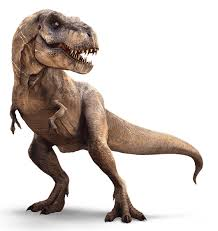
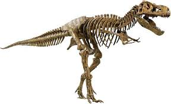
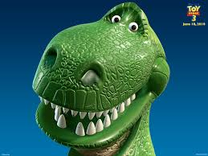
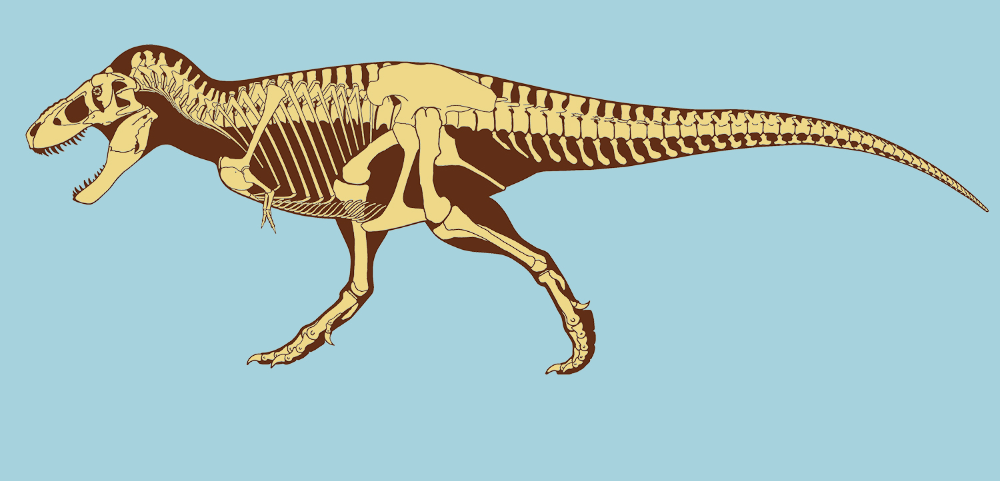
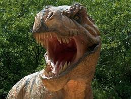

The name Tyrannosaurus rex means "king of the tyrant lizards. The T Rex was one of the biggest Carnivores to be ever discovered. The reason we say it's a carnivore its because of its teeth. The teeth are really sharp and point which can tear up into meath really fast. Dispite being huge the this dinosaur had some flaws. The T Rex arms were so tiny that even the dinosaur couldnt touch its hands. Even the biggest of dinosaurs has some weakness in them
Like all dinosaurs the T Rex was extinct because of the Astroid that hit earth long time ago. Although some surivive, the big dinosaur was immune to diseases. Scientist says another key factor of the extinction was of the mosquito. Even now the mosquito can carry tons of diseases. The T rex will no longer show its wraith in earth anymore.
How else could this dinosaur be cool! The T rex can go up to 25mph, which is pretty impressive due to its size and mass. It is also as tall as a 40 food building. Imagine how it would be with this creature alive. The T rex has move over than 100 bones in his body. These bones has to be super strong to carry him
Enjoy these other pics to see how the T rex looked like. We really dont know how the dinosaur looks like nor the color. We just have the bones and we know that it was huge.
 